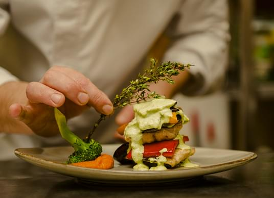
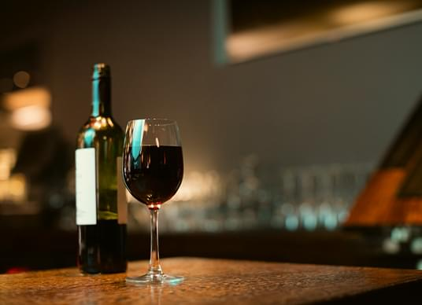
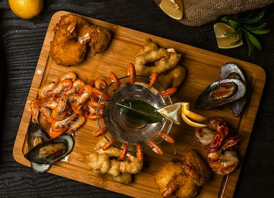

Portugal,
Dish by Word
Discover the culture, cuisine, and inspiration behind every dish. Here we share stories about traditions, ingredients, and the people who bring the spirit of our restaurant to life.

Our culinary Journal
Welcome to our little corner of stories and flavors. From traditional dishes to modern inspirations, here you’ll find everything that makes Portuguese cuisine so special.

Sweet Traditions:
Discovering Portuguese Desserts
Portuguese sweets are rich in flavor, history, and symbolism — each dessert tells a story from the past. From iconic pastéis de nata with their flaky crust and creamy custard to convent-born almond and egg yolk confections, these treats are more than indulgences — they’re cultural treasures.

The Heart of Portuguese Cuisine:
Tradition on Every Plate
Portuguese cuisine is a celebration of authenticity, simplicity, and heritage. In this article, we explore the roots of our most beloved dishes — from hearty stews to delicate seafood — and share how traditional flavors are preserved in every recipe we serve.

More Than a Meal:
The Culture of Portuguese Dining
In Portugal, food is more than just nourishment — it’s a way of life. Meals are moments to pause, connect, and celebrate with loved ones. In this article, we invite you to explore the warm, social spirit of Portuguese dining: long conversations over shared dishes, the importance of family recipes, and the joy of eating slowly, together.

The Art of Flavor:
How We Craft Every Dish
At Bartolo, every plate is a masterpiece, carefully crafted with passion and precision. We blend the finest ingredients with time-honored techniques to bring out bold, authentic flavors. From the first bite to the last, every dish tells a story of quality and creativity.

A Toast to Good Times:
The Bartolo Wine Experience
Great food deserves the perfect pairing, and at Bartolo, we take wine seriously. Our curated selection features exquisite bottles from renowned vineyards, chosen to complement every dish beautifully. Whether you're celebrating or simply savoring the moment, let us pour you something unforgettable.

From Sea to Table:
The Story Behind Our Seafood
With over 800 kilometers of coastline, Portugal has a deep connection to the ocean — and it’s reflected in every seafood dish we create. Discover how we carefully select the freshest fish and shellfish from trusted local sources, and how we prepare them using time-honored techniques.
External highlights

Subscribe to Us
Subscribe to us and stay up to date with the latest news, articles, and updates from Bartolo. Get a sneak peek into our culinary world, upcoming events, and behind-the-scenes stories. Be the first to know what’s exciting at our restaurant!